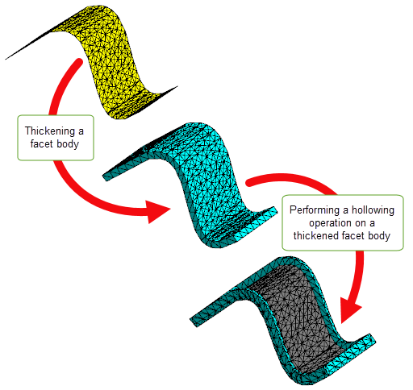
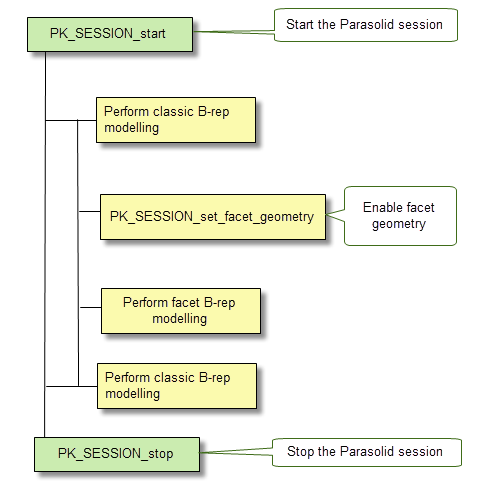

| |
Overview Of Convergent Modeling |
| <<< Introduction To Convergent Modeling | Chapters | Facet Model Structure >>> |
Parasolid provides the ability to perform topological operations, such as booleans, sectioning and offsetting, on bodies containing any combination of classic and facet geometry.
The different combinations of facet and “Classic Geometry” that may be found in a body are described below:
Within a mixed body you may find topology with combinations of facet or classic geometry as follows:
|
Note: In a mixed body, Parasolid still supports rubber topology (that is, topology that has no geometry attached), as an interim stage between modelling operations. For example: |
See Chapter 84, “Facet Model Structure” for more information on polylines and meshes.
See Chapter 85.6, “Creating a mixture of facet and classic geometry” for more information on combining mixed geometry.
|
Note: In the context of this volume, a mesh is
not the same as a finite element mesh. |
The following areas of Parasolid functionality can receive and operate on mesh data:
Figure 83-1 Performing a deformation operation on a mesh
Figure 83-2 Thickening and hollowing a facet body
Parasolid places some minimal requirements on the mesh and facet data that it can work with. This section explains what those requirements are.
|
All facets in a mesh must be triangular. Any attempt to pass mesh data that contains non-triangular facets to Parasolid will be unsuccessful. |
|
|
All meshes must be manifold, that is, they must have only two facets meeting along each mfin. If your application needs to pass non-manifold models to Parasolid, then you should use non-manifold topology with individual meshes that are themselves manifold. |
|
|
Meshes that are attached to models must be vertex matched.This means that along the polyline dividing the two meshes, the facet vertices of both meshes must lie in the same location as the position vectors on the polyline, so that they match one-to-one with those position vectors. Such models will always be watertight (i.e.there are no gaps between facets along the polyline), as shown in Figure 83-3 (a). Figure 83-3 (b) shows an example where some facet vertices along the polyline do not match one-to-one with the position vectors. |
Figure 83-3 Ensuring face meshes are vertex matched with the polyline of the edge
Disjoint meshes, that is, meshes with separate components, can be passed to Parasolid. These components must be split up before attaching them to Parasolid faces.
Self-intersecting meshes can also be passed to Parasolid, but you should treat these in the same way that you would treat self-intersecting B-surfaces: leave them as orphan geometry until you need them, and clean up the self-intersections before you attempt to model with them.
“Crab-claw” meshes are supported. These are meshes made up of connected sets of facets where facets also share a single common position at a single vertex with more than two laminar mfins.
All calls to Parasolid functions must take place within a Parasolid session. By default, support for Convergent Modeling is disabled when you start a Parasolid session. Before you can enable this functionality and begin to perform Convergent Modeling in Parasolid, you should do the following:
|
Note: Not all Parasolid functions support Convergent Modeling.You should check the
PK Interface Programming Reference Manual to see if the functions you wish to use support facet geometry. Interfaces that do not, are marked [NF] in the
PK Interface Programming Reference Manual and need to be left at their default values. Those that offer partial support are marked [PF] and can be changed to values that support facet geometry. In general, Parasolid functions that are not supported will give the error PK_ERROR_facet_geometry to indicate that the model contains facet geometry but the function does not support facet geometry. |
Parasolid provides a number of functions that let you manage Convergent Modeling within your application:
|
Allows you to enable or disable facet geometry within a session using
Default: PK_facet_geometry_no_c |
|
|
Allows you to enquire whether facet geometry is enabled within the session using |
|
|
PK_PART_receive, PK_PART_receive_b and PK_PART_receive_u |
The |
By default, facet geometry is disabled when you start a Parasolid session. To use mixed geometry you must have the
facet_geometry
and the
receive_mixed
options enabled as follows:
facet_geometry
to PK_facet_geometry_all_c.
receive_mixed
to a setting other than PK_receive_mixed_fail_c. At the present time, only PK_receive_mixed_allow_c is supported.Figure 83-4 shows the typical workflow required to create and work in a Parasolid session.
Figure 83-4 Typical workflow in a session using Convergent Modeling
You can check to see if facet geometry is present in a partition using PK_PARTITION_ask_facet_geom. This function determines if facet geometry is present in a partition. In addition, it can optionally return those parts that have facet geometry, and their geometric category, and any orphan facet geometry in the partition.
want_parts
is PK_LOGICAL_true, all parts containing facet geometry are returned.
want_geoms
is PK_LOGICAL_true, all orphan meshes and polylines are returned. See the PK Reference documentation for more information.
Parasolid also has two functions that provide information about the category of the geometric entities.
want_related_topols
is PK_related_topols_top_c, these related topologies and their categories are returned. In cases where the given topology is an assembly, only the top level component parts are returned.See the PK Reference documentation for more information on these functions.
The following workflow describes the recommended best practice for creating Parasolid meshes from foreign facet data.
| <<< Introduction To Convergent Modeling | Chapters | Facet Model Structure >>> |